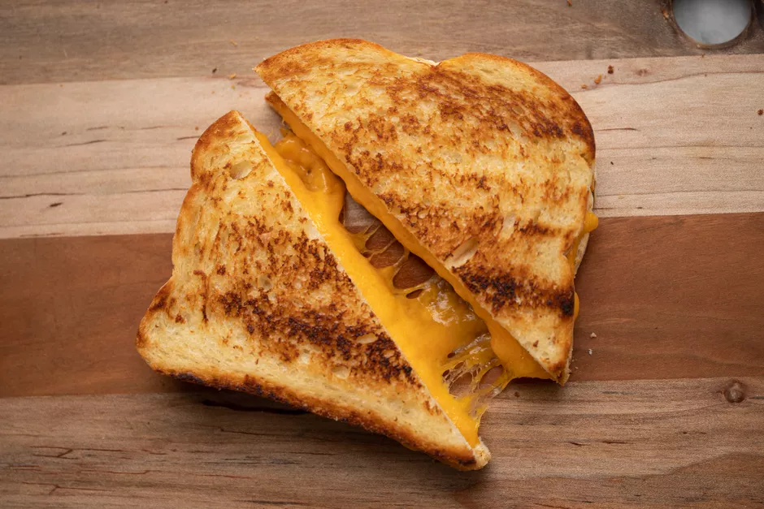

Home
Grilled Cheese Supreme!

This recipe is to create fantastic cookies for you to get through rough and stressful times!
Ingredients
- 4 slices whole-grain bread, or white, rye, or sourdough
- 4 ounces cheddar cheese, or mozzarella, Monterey Jack, or fontina, shredded or sliced
- 2 tablespoons butter, room temperature
- 2 pickle spears, optional
- 1 teaspoon whole-grain mustard, optional
- 1 slice tomato, optional
- 2 slices cooked bacon, optional
Steps
- Gather the ingredients.
- Place 2 slices of bread on a cutting board and spread 1/4 of the softened butter evenly and thinly on 1 side of each slice. Make sure you cover the entire slice from edge to edge.
- Place the pan over medium-low heat. Place 1 slice of bread in the pan, butter-side down. Mound about 2 ounces of cheese on the bread, more or less, depending on the size of the bread. (If you're going to add the tomato and bacon, do so now.)
- Place the second slice of bread on the cheese, butter-side up.
- When the bottom slice is browned, carefully flip the sandwich over to brown the other side. If the bread is browning too quickly, turn the heat down.
- Remove the sandwich to a plate and repeat Steps 2 through 5 to make the remaining sandwiches.